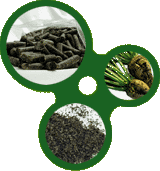

|

|
|
Sugar Beet Pulp Shreds is a co-product of the sugar beet industry, and offer a valuable feed resource for all types of livestock. Sugar beet pulp shreds are the fibrous portion of the sugar beet left after the sugars are removed, and is mechanically pressed and dried to reduce the water content to approximately 9%, Sugar beet pulp fiber is highly digestible, extremely palatable feed in a form that is considered less dusty than hay.
Variation may occur depending on source
|
|
|
|
Dry Matter
Moisture
Protein, Crude
TDN
Fiber, Crude
ADF — Acid Detergent Fiber
NDF — Neutral Detergent Fiber
NEL — Net Energy Lactation
NEG — Net Energy Gain
NEM — Net Energy Maintenance
Total Sugars
Total Sugars - Molasses
Fat
Ash
Calcium
Phosphorus
Magnesium
Potassium
Sulfur
Boron
Manganese
Zinc
Copper
Iron
Aluminum
Sodium
|
9.21
74.78
18.17
22.71
44.15
77.04
51.79
80.00
9.56
15.5
0.70
6.22
1.72
0.08
0.33
0.36
0.38
45.00
86.00
21.00
16.00
308.00
259.00
911.00
|
|
91.50%
8.50%
8.42%
67.78%
16.62%
20.78%
40.40%
70.49 Mcal/lb
47.38 Mcal/lb
73.20 Mcal/lb
8.75%
14.2
0.64%
5.69%
1.57%
0.07%
0.30%
0.33%
0.35%
41.17 ppm
78.70 ppm
19.21 ppm
14.64 ppm
281.82 ppm
236.98 ppm
833.56 ppm
|
|
Sugar beet pulp allows animals to be on full feed and reduces the danger of bloating and digestive disturbance. For show animals, sugar beet pulp has a cooling affect and enhances the bloom of the coat for best appearance, and when soaked in water it provides succulence in the ration. Sugar beet pulp provides a variety in feed rations, firm's stools for cleaner pen operation and allows for increased feed intake.
Sugar beet pulp shreds can easily be stacked and stored. Changes in temperature are not harmful if reasonably dry conditions are maintained. Roaches and weevils will not attack sugar beet pulp shreds nor is it susceptible to rodent damage. When kept dry, sugar beet pulp shreds can be stored indefinitely.
back to Products
|
|
|
|